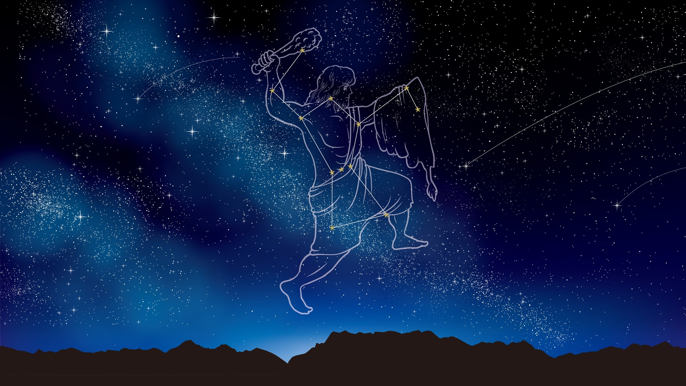

The Hunter Orion
The story of Orion and Artemis is a tale as old as time. It teaches us to not believe in the things hear from word of mouth, and the consequences of doing so.Orion was a fabulous hunter, it was said that once him and his two dogs, Canis Major and Canis Minor, started tracking a target, it was only a matter of time before they succeeded. It was this fact that most likely lead to Orion going to the forest where Artemis, the Goddess of Wild Animals and the Hunt, resided.
On his way there, he spotted what he thought was a flock of birds and quickly gave chase. It was not long however, before he quickly realized that these weren’t birds, but seven Nymphs dressed in white tunics. Now, this normally would not be a cause for concern, but these nymphs were the seven daughters of the Titan Atlas and the Oceanid Pleione; the later of which Orion had been tracking for quite some time. Among these seven was the nymph Merope, who Orion at the time was passionately in love with. This caused him to reach out and grab her, but just as he could make contact the nyphms cried out to Zeus and in pity he transformed all of the nymphs into doves and placed them into the stars. While saddened by this outcome, it was quickly overshadowed by the Goddess Artemis approaching him and complimenting him on his hunting prowess and strength. Soon Orion and Artemis become trustworthy companions, often challenging each other to races and archery competitions; and as night fell, the two would exchange stories and laugh in front of a fire. They fell madly in love, accompanying each other everywhere and hunting the days away. This peace however, wouldn’t not last.
Unbeknownst to them, Artemis’s brother Apollo, the God of Prophecy and ironically Truth, became jealous of their relationship. And began to put plans in place to rid the earth of Orion.
Using his godly powers, he sent a massive scorpion to attack and kill Orion as he slept, but in an amazing stroke of luck, Orion dreamt of this very thing happening and quickly arose to battle the scorpion. They exchange furious blows, but as the battle waged and Orion’s strength waned, he found that he could not pierce the creatures hide and began searching for an escape. The scorpion lunged towards Orion once more and in a desperate attempt to live, he ran and dove into the nearby shore and began to swim furiously. Apollo watched as these events unfolded and quickly came up with a plan to finish the job.
He ran into the compound where his sister Artemis and her hunters slept, and told her that an evil man who attacked a forest priestess was swimming by sea to escape. Blinded by her rage Artemis grabbed her bow and let loose an arrow that struck true, right into the heart of Orion.
Noticing her mistake far too late, she quickly swam out to retrieve his body, hoping that her friend Crete, the goddess of medicine would bring him back to life. Zeus interfered with this request, stating that there was a line between mortals and gods, and bringing him back to would cross that line.
Sadden by the loss of the one man she loved, Artemis turned to the stars and used her own godly powers to place his soul in the stars, where he remains even to this day.